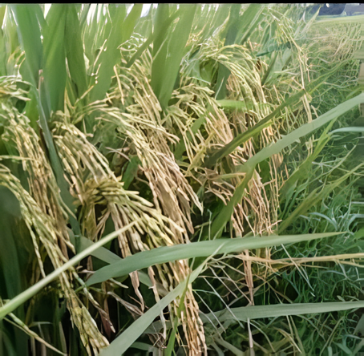

Pilihan Utama Kuliner Tradisional Nusantara

Sumatera
Pera
Sedang Ramping
Nasi Rames / Lontong
Padi Kuku Balam merupakan varietas lokal yang banyak dibudidayakan untuk memenuhi permintaan pasar kuliner spesifik. Beras ini memiliki tekstur pera yang sangat ideal untuk diolah menjadi ketupat, lontong, maupun nasi rames khas Sumatera. Karakteristik butirannya yang padat dan tidak mudah hancur saat dimasak dalam waktu lama menjadikannya primadona bagi para pelaku usaha gastronomi tradisional.
Varietas ini memiliki tingkat adaptabilitas yang baik terhadap lingkungan dengan curah hujan tinggi. Batangnya yang relatif kokoh membuatnya memiliki ketahanan yang mumpuni terhadap risiko rebah (lodoh) dibandingkan varietas lokal lainnya.
Respons pemupukan Kuku Balam tidak secepat varietas unggul baru (VUB). Jika diberikan pupuk nitrogen secara berlebihan untuk memacu pertumbuhan, varietas ini justru menjadi sangat rentan terhadap infeksi jamur, sehingga membutuhkan takaran nutrisi yang sangat presisi.
Alur waktu fase pertumbuhan padi Kuku Balam yang membutuhkan manajemen pemupukan presisi.
| Estimasi Biaya Produksi | Rp 8.000.000 |
| Estimasi Hasil (5.0 Ton Gabah) | Rp 28.000.000 |
| Estimasi Margin Kotor | Rp 20.000.000 |
Pilih varietas di sisi kanan untuk membandingkan metrik agronomi dengan Kuku Balam.